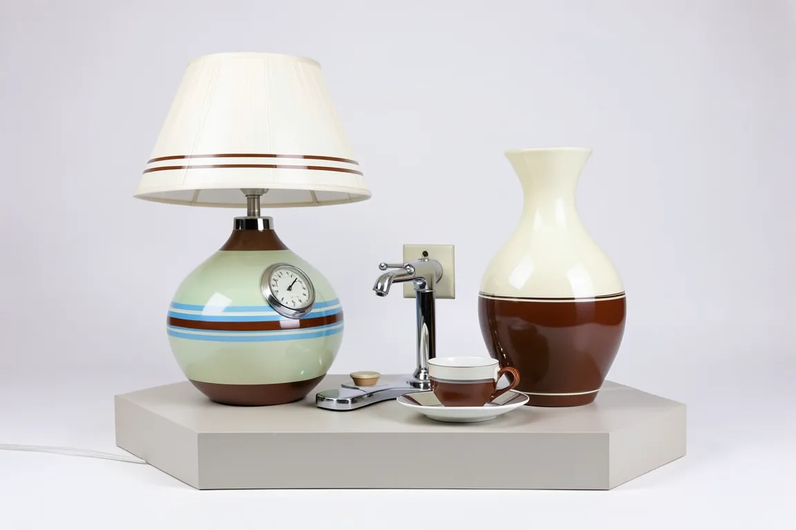

Smooth, rounded objects that look fast: toasters, radios, lamps and chairs in chrome, aluminium, Bakelite and enamel, with long horizontal lines and speed stripes, made in mass series.

Core thesis
A mass-made object should look as if it moves through air: a smooth shell, round corners and long lines show progress and sell.
Design principles
Round each outside corner with a radius of 20 to 60 mm; no sharp corner shows on the body.
Draw long horizontal lines: two or three speed stripes, grooves or bands that run the full length of the object.
Wrap the moving parts in one smooth shell of pressed steel, cast aluminium or moulded Bakelite.
Use chrome, polished aluminium and white or cream enamel; they reflect the light and look clean.
Taper the form at the rear in a teardrop, so that the outline cuts the air.
Hide the joints and the fasteners under the shell; a seam is a single line or a chrome band.
Design for mass production: one die or one mould makes thousands of the same shell.